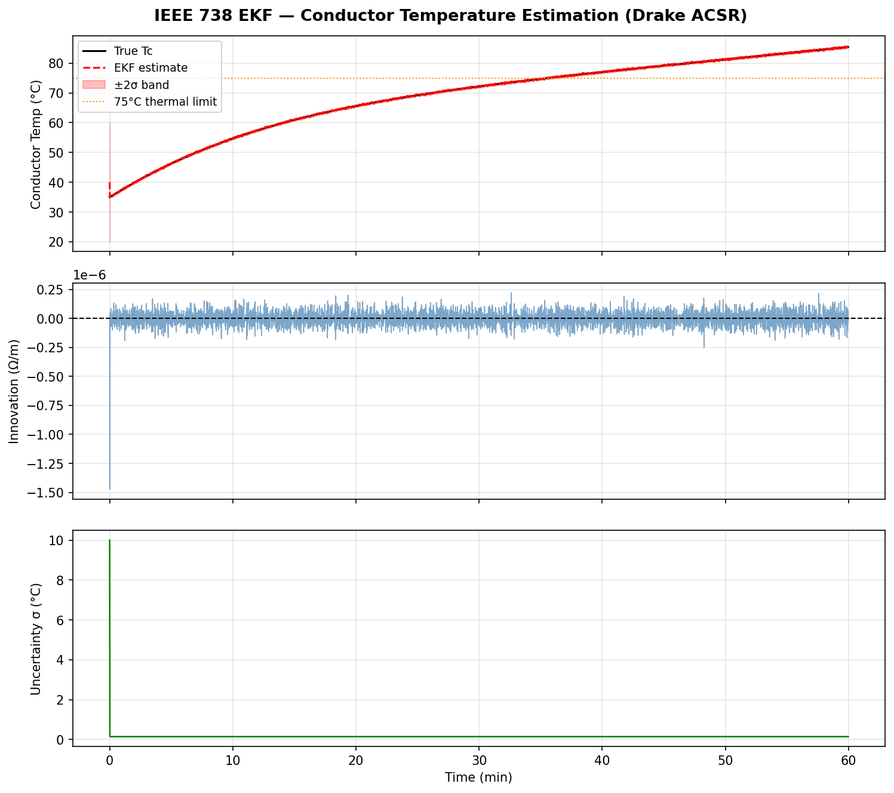
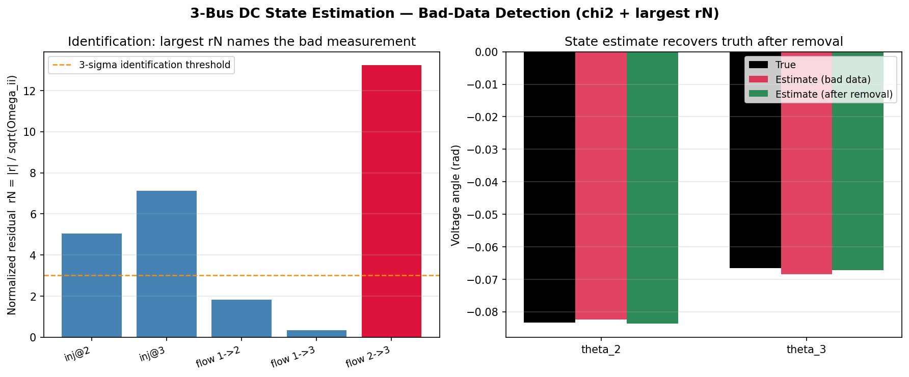

1. EKF Line-Temperature / Dynamic Line Rating
What it is
A from-scratch Extended Kalman Filter (EKF) — NumPy/SciPy only, no external KF library — that estimates overhead conductor temperature from simulated current telemetry, demonstrating the core idea behind Dynamic Line Rating (DLR) virtual sensing.
Why it was built (interview gap it closes)
The role requires virtual-sensing experience: inferring unmeasured physical quantities from indirect measurements. This demo shows the EKF predict-update loop applied to a conductor thermal model — the same first-order thermal ODE structure used in building energy management (Juan's OSED work), just with Drake ACSR parameters instead of building RC parameters.
C·dT/dt = Q_HVAC − UA·(T−Ta)
— structurally identical to the IEEE 738 conductor ODE. Swapping building RC
parameters for Drake ACSR parameters is a parameter substitution, not a conceptual
leap."What it demonstrates
- Simulates a Drake ACSR conductor heating up as current ramps 400 A → 600 A over one hour using the IEEE 738 thermal ODE as the physics engine.
- Generates noisy apparent-resistance measurements (
z = R25·(1 + α·(Tc−25))) mimicking current + voltage-drop observations. - Runs the EKF predict-update loop — IEEE 738 ODE as the predict step; resistance model as the update step.
- Computes a Dynamic Line Rating ampacity at the estimated temperature, showing available capacity vs. the 75 °C thermal limit.
- Monitors filter health via a Normalized Innovation Squared (NIS) / chi-squared gate — only 0.3 % of steps trigger (well below the expected 5 % false-alarm rate).

Key function: ekf_step
One complete predict-update cycle (scalar state). The IEEE 738 ODE is the predict step; the apparent-resistance model is the update step.
def ekf_step(Tc_hat, P, I, Ta, z_meas, Q, R_noise, dt=1.0):
"""One EKF predict-update cycle (scalar state).
State : Tc (°C)
Inputs : I (A), Ta (°C)
Measurement : z = apparent resistance R_meas = R25*(1+alpha_R*(Tc-25)) [Ω/m]
Parameters
----------
Tc_hat : float prior state estimate (°C)
P : float prior state covariance (°C²)
I : float current (A)
Ta : float ambient temperature (°C)
z_meas : float measured apparent resistance (Ω/m)
Q : float process noise variance (°C²/step)
R_noise : float measurement noise variance ((Ω/m)²)
dt : float time step (s)
Returns
-------
Tc_post : float updated state estimate
P_post : float updated covariance
innov : float innovation y_k = z_meas - z_pred
S : float innovation covariance
"""
# === PREDICT ===
rhs = ieee738_rhs(0.0, Tc_hat, I, Ta)
Tc_pred = Tc_hat + dt * rhs # Euler step
A = _process_jacobian(Tc_hat, I, Ta, dt)
P_pred = A**2 * P + Q # scalar covariance propagation
# === UPDATE ===
# Measurement Jacobian: H = d/dTc [R25*(1+alpha_R*(Tc-25))] = R25*alpha_R
H = R25 * ALPHA_R # constant scalar ≈ 2.93e-7 Ω/(m·°C)
z_pred = R25 * (1.0 + ALPHA_R * (Tc_pred - 25.0))
innov = z_meas - z_pred # innovation y_k
S = H**2 * P_pred + R_noise # innovation covariance
K = H * P_pred / S # Kalman gain
Tc_post = Tc_pred + K * innov
P_post = (1.0 - K * H) * P_pred # standard form
return Tc_post, P_post, innov, S
2. DC Power-Flow Bad-Data Detection
What it is
A from-scratch Weighted-Least-Squares (WLS) state estimator for a 3-bus DC power-flow network — NumPy/SciPy only, no power-flow library — that infers bus voltage angles from a redundant measurement set, then detects and removes a single corrupted measurement using the chi-squared test and the largest normalized residual.
Why it was built (interview gap it closes)
The role names state estimation and bad-data detection as core competencies.
This demo is the textbook TVS-02 + TVS-03 illustration: the DC model
h(θ) = Hθ is linear, so the Gauss-Newton
iteration from Phase 1 collapses to a single normal-equations solve
— demonstrating the same WLS machinery Juan already uses, now applied to a
grid power network.
What it demonstrates
- Builds a 3-bus DC network and solves the reduced power flow for ground-truth angles.
- Estimates two voltage angles via one-shot linear WLS from 5 redundant measurements (injections + line flows).
- Injects a gross error (+15σ) on the line-flow 2→3 measurement.
- Runs the chi-squared test (J = 176.7 vs threshold 7.8) to detect bad data.
- Uses the largest normalized residual (rN = 13.2 on measurement 5) to identify the culprit.
- Removes the suspect and re-solves: J = 1.8, angles within 7×10−4 rad of truth.

Key functions
wls_solve — one-shot linear WLS (the linear
collapse of KAL-01's normal equations):
def wls_solve(H, W, z):
"""One-shot linear WLS (DC collapse of KAL-01's normal equations)."""
G = H.T @ W @ H # gain / information matrix
theta_hat = np.linalg.solve(G, H.T @ W @ z)
r = z - H @ theta_hat # residuals
J = r @ W @ r # weighted residual cost ~ chi2(m-n)
return theta_hat, r, J, G
chi2_test — detection: is there bad data?
def chi2_test(J, df, confidence=0.95):
"""Detection: is there bad data? J > chi2.ppf(0.95, df) flags an inconsistency."""
threshold = chi2.ppf(confidence, df)
return threshold, bool(J > threshold)
normalized_residuals — identification: which
measurement is the culprit?
def normalized_residuals(r, H, G, W):
"""Identification: largest normalized residual names the suspect measurement.
Omega = R - H G^-1 H^T is the residual covariance; rN_i = |r_i| / sqrt(Omega_ii).
"""
Omega = np.diag(1.0 / np.diag(W)) - H @ np.linalg.inv(G) @ H.T # R - H G^-1 H^T
rN = np.abs(r) / np.sqrt(np.diag(Omega))
return rN
3. Federated Learning — FedAvg / FedProx / Byzantine Robustness
What it is
A from-scratch implementation of FedAvg, FedProx (proximal regularization), Krum, and coordinate-wise median entirely in NumPy — no Flower, no PySyft, no framework dependency. Six simulated substations with non-IID data distributions demonstrate client drift, FedProx's proximal damping, and Byzantine-robust aggregation.
Why it was built (interview gap it closes)
The role names "federated control frameworks" and edge-ML expertise. This demo shows FedAvg aggregation math, the proximal term that keeps substation models tethered to the global fleet model, and Krum's distance-based rejection of a poisoned client — all the algorithmic pieces that underpin a production federated virtual-sensing system without ever shipping raw telemetry.
What it demonstrates
- Non-IID clients: six substations with different local data distributions (feeder means 0.0 … 2.5).
- FedAvg convergence over 20 communication rounds: weighted average w = ∑(n_k/n)·w_k.
- FedProx damps client drift: proximal term +(μ/2)‖w−w_t‖² lives in the client's local objective (not the server aggregation — a common interview pitfall).
- Byzantine injection: client 0 sends a poisoned update (shift −5.0). Plain FedAvg averages the poison in; Krum and coordinate-wise median reject it.
Key numeric output (seed 42, reproducible)
| Method | Final estimate | Error vs true optimum (1.22) | Notes |
|---|---|---|---|
| Plain FedAvg | +0.5826 | −0.64 | Poisoned — client 0 pulled it off |
| FedProx (μ = 0.5) | +1.2237 | +0.006 | Proximal term kept local models near global |
| Krum (f = 1) | +1.4743 | +0.26 | Rejected client 0; selected honest update |
| Coord Median | +1.2548 | +0.04 | Median ignores outlier |
Key functions
fedavg_aggregate — server-side weighted-average
aggregation (McMahan et al. 2017):
def fedavg_aggregate(local_models, n_samples):
"""Server aggregation: weighted average sum((n_k / n) * w_k)."""
n_total = sum(n_samples)
return sum((n / n_total) * w for n, w in zip(n_samples, local_models))
krum_select — Byzantine-robust update selection
(Blanchard et al. 2017): picks the update with the minimum sum of distances
to its nearest neighbors — honest updates cluster, the poisoned update is distant:
def krum_select(updates, f):
"""Krum: pick the update with minimum sum-of-distances to its n-f-2 nearest neighbors.
Blanchard et al. NIPS 2017 — honest updates cluster together; the poisoned
update is far from the cluster so its Krum score is high (never selected).
Returns the index of the selected (most trustworthy) update.
"""
n = len(updates)
n_neighbors = n - f - 2
scores = []
for i, u_i in enumerate(updates):
dists = sorted(
[(u_i - u_j) ** 2 for j, u_j in enumerate(updates) if j != i]
)
scores.append(sum(dists[:n_neighbors]))
return int(np.argmin(scores))